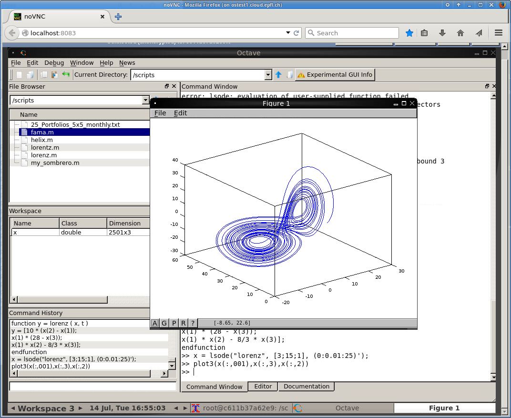
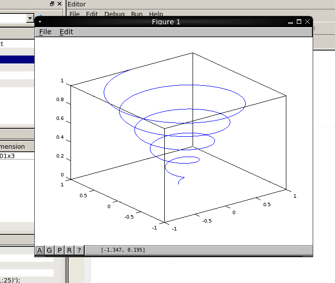
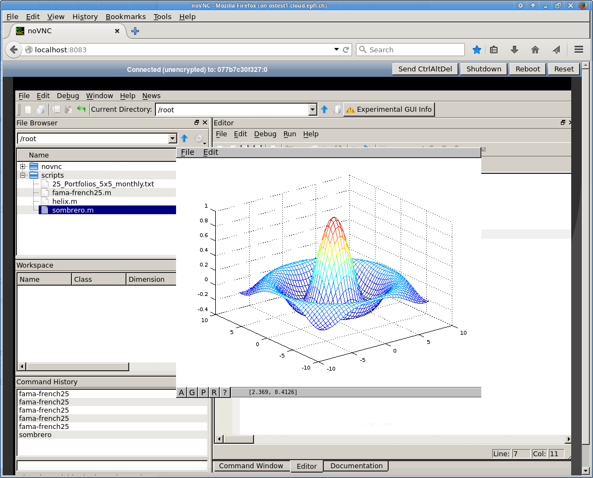

About.
This docker runs GNU Octave - an open source Matlab - which provides capabilities for the numerical solution of linear and nonlinear problems, and for performing other numerical experiments. The Octave GUI have to be accessed through a browser in a noVNC windows.
What's inside ?
This container runs:
- Xvfb - X11 in a virtual framebuffer
- x11vnc - A VNC server that scrapes the above X11 server
- noNVC - A HTML5 canvas vnc viewer
- Fluxbox - a small window manager
- GNU Octave - to demo that it works
Screenshots
Visualizing the Lorenz Strange Attractor with Octave
(from datavistools)

Thanks to Doug on the Octave mailinglist!
Helix
(from Octave manual)

Sombrero
(from Octave manual)

How to
With Docker Hub
docker pull epflsti/octave-x11-novnc-dockerdocker run -p 8083:8083 -ti epflsti/octave-x11-novnc-docker:latestfirefox http://localhost:8083
Manual Build
docker build -t epflsti/wine-x11-novnc-docker:latest .docker run -p 8083:8083 -ti epflsti/wine-x11-novnc-docker:latestfirefox http://localhost:8083
✓ Octave is launched, just run some script e.g. my_sombrero.m
Thanks
Thanks to @solarkennedy for his wine-x11-novnc-docker!
Contact
I would be happy to know that this docker is helping someone, please mention @ponsfrilus if you do so.